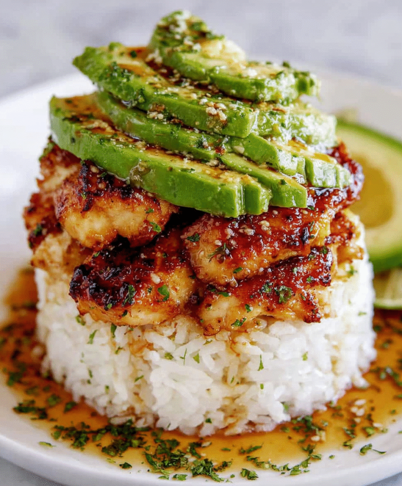

Honey Lime Chicken Avocado Stack

Description
This Honey Lime Chicken & Avocado Rice Stack is proper restaurant-quality food at home – tender caramelized chicken with creamy avocado and zesty rice, all stacked up for impressive presentation!
Ingredients
- 4 chicken breasts
- 1/2 cup honey
- 1/2 cup lime juice
- 2 avocado
- 2 cup cooked rice
- ½ cup cilantro chopped
- Salt and pepper, TT
Steps:
- Marinate the chicken breasts in honey and lime juice for at least 30 minutes.
- Grill the chicken until fully cooked, about 6-7 minutes per side.
- While the chicken is cooking, mash the avocado and mix it with the cooked rice and cilantro.
- Season the avocado rice with salt and pepper to taste.
- Once the chicken is cooked, slice it and layer it over the avocado rice.
- Serve immediately and enjoy!
Home